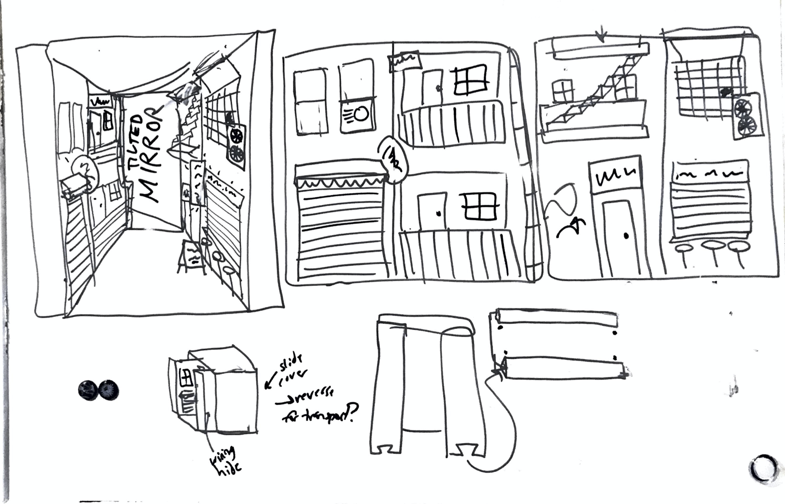
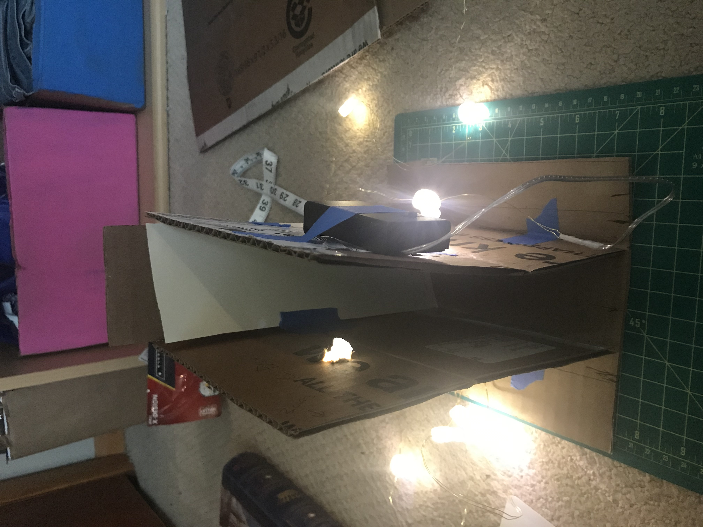
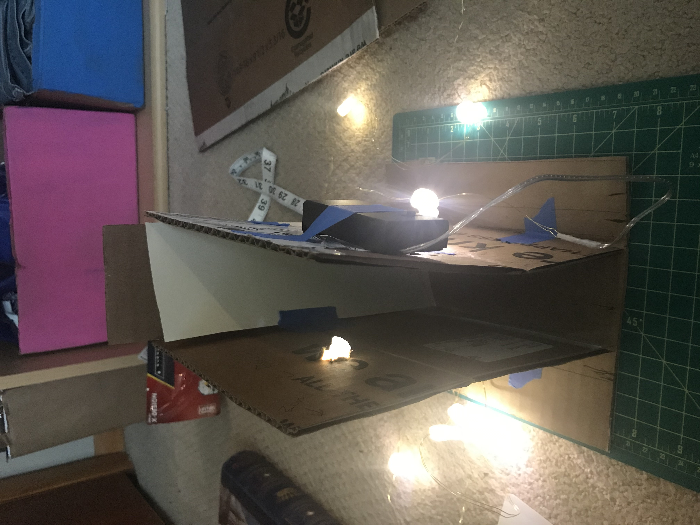

Assignment 7: Final Project Proposal
Concept
I intend to fabricate & construct a "booknook"—a bookend shelf insert with a miniature world built inside.
My sources of inspiration come from the subreddit r/booknooks and looking up pictures of alleyways on Unsplash.
I also created this moodboard on Pinterest—the vibe I'm going for is ~grungy city alleyway~.
Brainstorming
I sketched out what I want the interior facades of the booknook to look like. I think I will separately print pieces like the store awnings, fire escape, and signs and attach them with glue to make the printing process more segmented and easier.

I also constructed a cardboard prototype to figure out dimensions and plan the structure.


The booknook will have an interior piece with the building façades & other miniature pieces attached. On the outside of the interior walls will be the wiring for lights (I plan on reusing a small string of battery operated fairy lights that I already own. The lights will shine through holes in the interior walls.
 

At the back of the booknook I will have a mirror at an angle. This is a technique that I saw people using on the r/booknook subreddit, it reflects the interior building façade and makes it look like the alley continues off into the distance at an angle.
There will also be an exterior piece that I want to be able to slide over the interior piece and hide the wiring. I also want to be able to flip the exterior piece to enclose the booknook and make it safer for travel. I plan on trying to develop some sort of sliding track for the exterior so it stays securely on the interior piece.


Dimensions
Since I want to make the height of the booknook 23cm it is too high to print the walls flat in one piece using my 3D printer, so I will have to print them in two pieces and glue together. Based on my cardboard prototype I plan on using these dimensions for each wall part:
Interior Façades:
Exterior Walls:
Interior Back:
Exterior Back:
Front Exterior Sides:
Etc:
Tasks
- CAD Modelling
- Prototyping pieces
- Interior façade walls & ground
- Exterior cover with ceiling
- Interior pieces - 4 lightable signs, 1 fire escape, store awning, fan
- 3D Printing of pieces
- Finishing
- Cleaning up prints as needed with sanding
- Painting pieces
- Making fake glass for windows (dried glue?)
- Construction - gluing together pieces
- Size & insert mirror
- Wiring - adding lights for signs
Supplies
Total budget: ~$25
Timeline
If I follow my target timeline I will complete my project at a steady pace with a few days to spare. I have detailed my "drop deadlines", or the latest dates at which each step must be completed to finish the project by its due date.
Target Timeline
| Date(s) | Task |
|---|---|
| May 18 | Prototyping, order delivered supplies |
| May 19 | Model & Begin Printing Exterior |
| May 20-22 | Model Interior Pieces (finish Printing Exterior while modelling), purchase local supplies |
| May 23-26 | Print Interior Pieces (finish pieces while printing) |
| May 28 | Finish Pieces (sanding, painting, etc) |
| May 29 | Final Construction |
| May 30 | Create Webpage |
| May 31-June 2 | x |
| June 3 | Final Presentation |
Drop Deadlines
| Latest Date | Task |
|---|---|
| May 27 | Complete Prototyping |
| May 28 | Complete modelling all exterior pieces |
| May 30 | Complete modelling all interior pieces, Complete printing all exterior pieces |
| June 1 | Complete printing all interior pieces, All supplies must be obtained, Complete finishing (sanding, painting, etc) |
| June 2 | Complete final construction |
| June 3 | Create Final Project Webpage, Final Presentation |